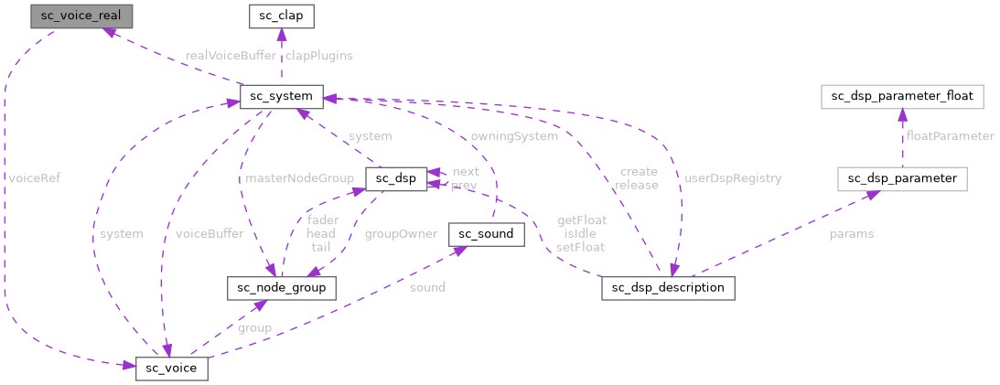

|
Sound Bakery
Open-source audio middleware for games
|
|
Sound Bakery
Open-source audio middleware for games
|
A real voice that is connected to the DSP graph. More...
#include <sound_chef_common.h>

Public Attributes | |
| ma_node_base | baseNode |
| sc_voice * | voiceRef |
| sc_sound_mode | mode |
| ma_decoder * | memoryDecoder |
A real voice that is connected to the DSP graph.
Real voices are limited by the sc_system_config::maxRealVoices value passed during system initialization.